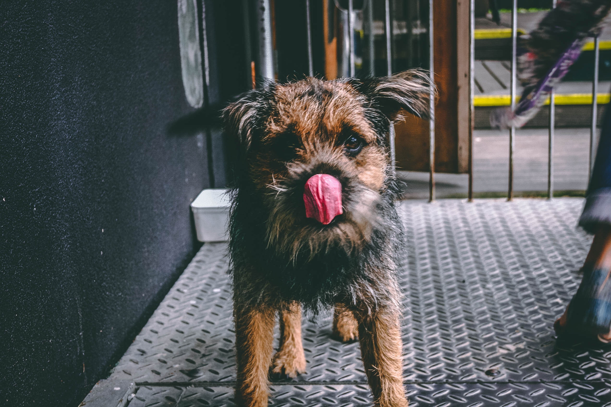
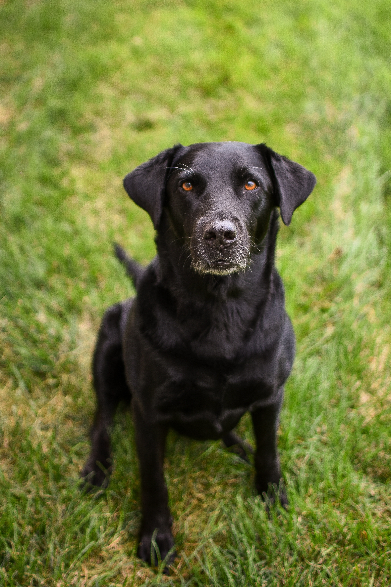
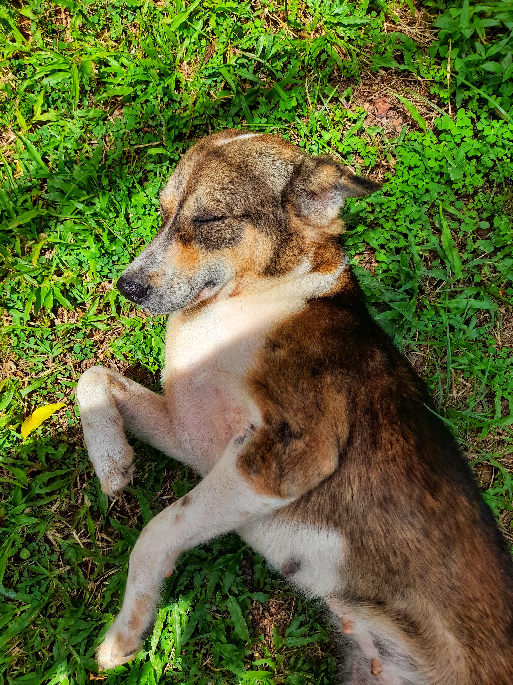

Adoptar
Todos nuestros animales están vacunados, desparasitados y esterilizados. Solicitá una visita para conocerlos.
#AdoptaNoCompres
Ben- 7 años. Flaco de tamaño mediano a grande. Afectuoso.
Adoptar Darcy- 8 años. Se lleva bien con otros perros.
Adoptar
Ero- 8 años. Mediano, super bueno.
Adoptar Luna- 6 años. Es sorda, ama jugar y correr.
Adoptar Ben- 3 años. Hembra tamaño mediano a grande. Duerme mucho.
Adoptar